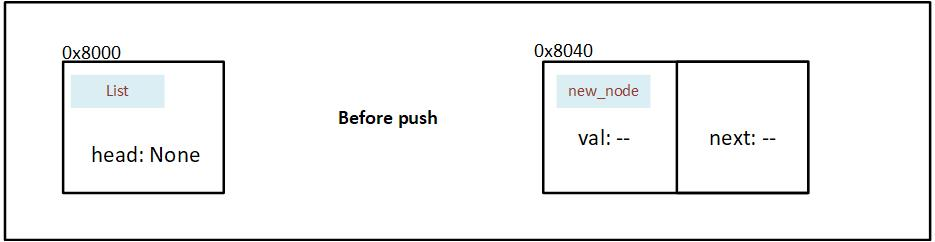
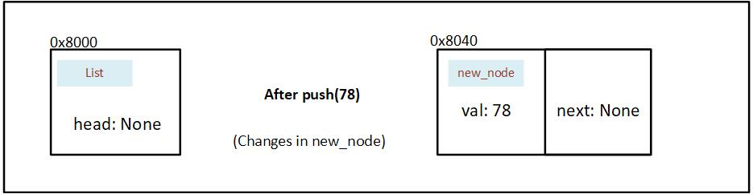
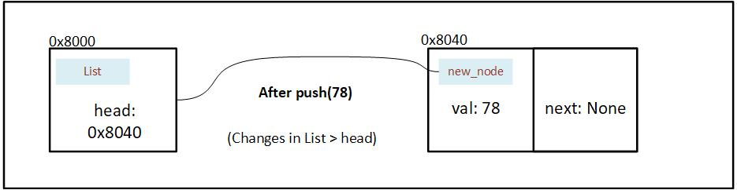
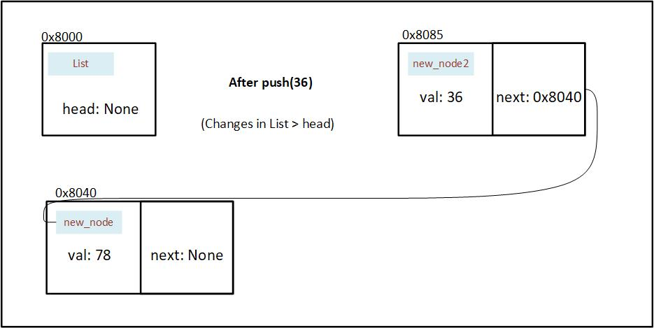
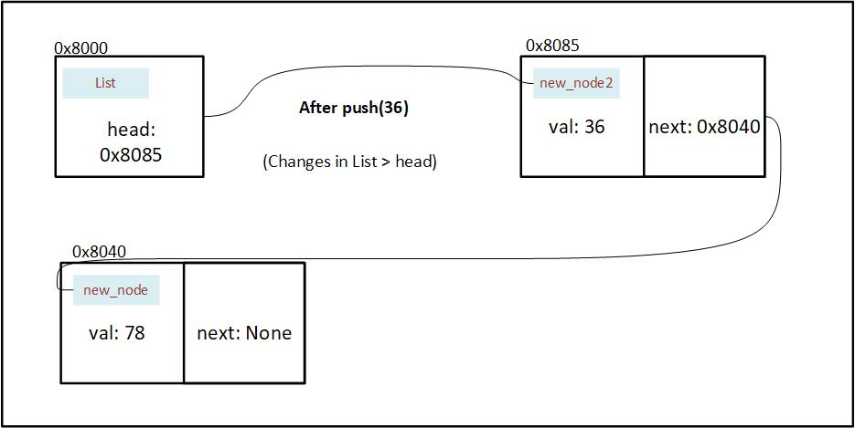

Methods
Now that we've written our data structures, we'll also write the algorithms that will go along with it.
In rust we write the methods that go with a particular struct inside an impl. In this case it will be the List struct.
impl List {
// Write the Methods that go along with List here
}Remember, since we're writing the implementation code for
List, we'll have access to only the data structure present in the List, i.e.head: Option<Box<i32>>
new
The first method I'd like to write is new which will initialize an empty List.
impl List {
pub fn new() -> Self {
List { head: None }
}
}When we call the new method on a List, it will initialize the head to point to None. We can scale this method to accept a new node instead of creating an empty list.
Now that we've created an empty list, we'll link the first node.
push
impl List {
pub fn push(&mut self, val: i32) {
let new_node = Box::new(Node {
val: val,
next: mem::replace(&mut self.head, None),
});
self.head = Some(new_node);
}
}the push method essentialyy does the following:
- Take itself and value to be inserted as input.
- Create a
new_nodewith the inserted value asval. - It temporarily replaces the address in head to None, and puts the address as next.
- It reassigns the head node to point to the
new_node.
Let's visually see what is happening
Two things are happening in our push method:
- A node is being created and updated
- The head is being updated
This is before our first push operation: We've initialized a List, but haven't yet pushed a Node into it. 
We create a node and insert 78 as val. Using mem::replace, we also move the value in head (currently None) into next and insert None into head temporarily.

After the new node is created we wrap the address in a Option, and then assign it to head. 
We push one more value into the list (36). We also update next by assigning the current value of head. And replace the value in head with None temporarily.

At last we wrap the address in our option, and insert into the head. 
pop
The pop method will be used to remove and access the last element in our linked list. The method will take itself as input and give the removed element as an output.
There is a possibility that the list is empty, so to represent that, we'll use
Option.
impl List {
pub fn pop(&mut self) -> Option<i32> {
match &self.head {
None => {
return None;
},
Some(node) {
}
}
}
}
fn main() {
let mut ll = List::new();
ll.push(7);
}
}Alright, now that we have written a function that creates, reads, updates and deletes a list node, we'll move on to the next step of design: optimization.
Let's take a look at the code we've written so far:
use std::mem; #[derive(Debug)] #[allow(dead_code)] struct List { head: Option<Box<Node>>, } struct Node { val: i32, next: Option<Box<Node>>, } impl List { pub fn new() -> Self { List { head: None } } pub fn push(&mut self, val: i32) { let new_node = Box::new(Node { val: val, next: mem::replace(&mut self.head, None), }); self.head = Some(new_node); } pub fn pop(&mut self) -> Option<i32> { match &self.head { None => { return None; }, Some(node) { } } } } fn main() { let mut ll = List::new(); ll.push(7); }